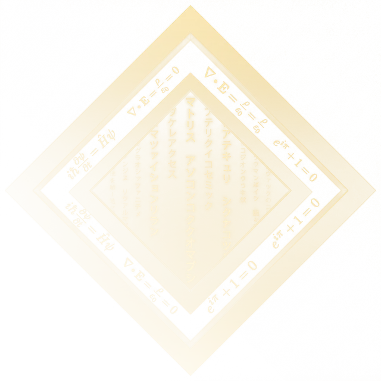

Hi, I'm Jan Pilik.
Contact
I build large-scale
software products
design
visual identity
ui/ux
end
end
to
frontend
backend
architecture
rwd
system
See my work
E-commerce store:
sanglogium.com
0:18
Performance
Unique design system
Virtual file system catalogue
instant navigation
Responsive web design
Authentication
Filters & sorting
Search
Secure checkout
User accounts
Basket
Newsletter
Conclusive proofs